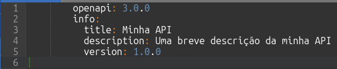
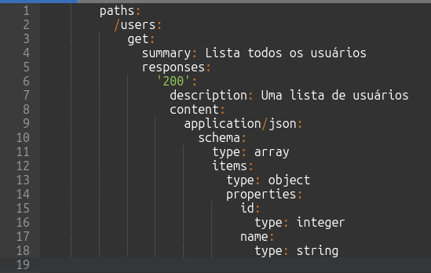
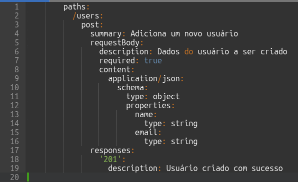
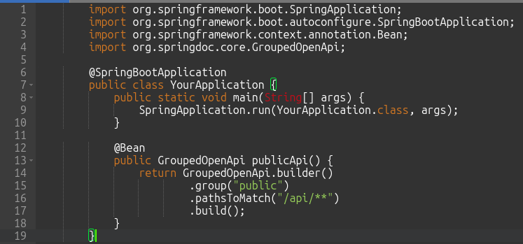
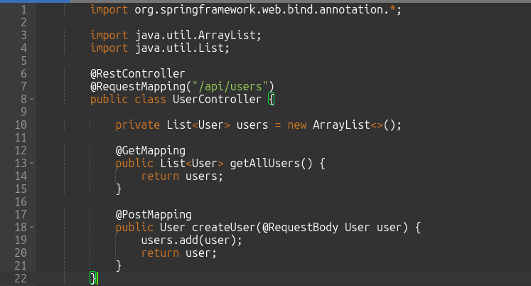
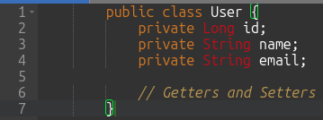
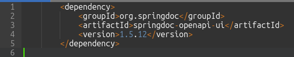
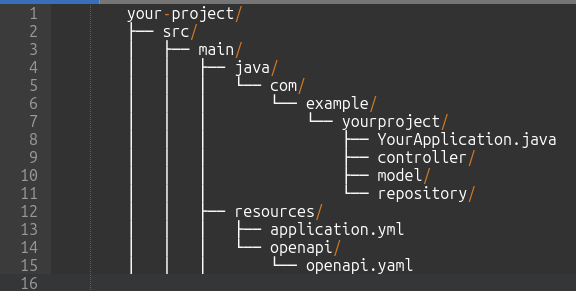
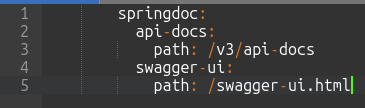

OPenAPI Rest
Implementando e Documentando APIs RESTful com OpenAPI e Spring Boot: Um Guia Prático

Desenvolvedor Java Sênior na Develcode
26 de agosto de 2024
1. Introdução
No desenvolvimento de APIs RESTful, a padronização e a clareza na documentação são essenciais para garantir uma comunicação eficiente entre desenvolvedores e a integração de serviços. O OpenAPI surge como uma solução robusta para descrever APIs de forma padronizada e legível tanto por humanos quanto por máquinas. No ecossistema Java, especialmente com o uso do Spring Boot, o OpenAPI se destaca por facilitar a definição de endpoints, a geração automática de documentação e a validação de contratos. Este artigo explora como implementar operações GET e POST utilizando OpenAPI e YAML, destacando as principais classes e configurações necessárias em um projeto Spring Boot. Através de exemplos práticos, veremos como o OpenAPI pode simplificar o desenvolvimento e a manutenção de APIs, promovendo uma maior eficiência e colaboração no desenvolvimento de software.
2. Definição
OpenAPI é uma especificação para descrever APIs RESTful de forma padronizada e legível tanto por humanos quanto por máquinas. No mundo Java, especialmente com frameworks como Spring Boot, o OpenAPI é utilizado para documentar e definir endpoints de APIs, facilitando a comunicação entre desenvolvedores e a integração de serviços. Ele permite a geração automática de documentação, validação de contratos e até mesmo a criação de clientes e servidores a partir das especificações definidas em arquivos YAML ou JSON.
Vamos começar com uma visão geral de como definir operações GET e POST usando OpenAPI e YAML.
3. Estrutura Básica do OpenAPI
Um arquivo OpenAPI geralmente começa com algumas informações básicas sobre a API, como título, descrição e versão. Aqui está um exemplo básico:

Exemplo básico de um arquivo OpenAPI.
4. Definindo uma Operação GET
A operação GET é usada para recuperar dados de um servidor. Aqui está um exemplo de como definir uma operação GET para obter uma lista de usuários:

Arquivo de configuração YAML para o endpoint de GET.
5. Definindo uma Operação POST
A operação POST é usada para enviar dados ao servidor, geralmente para criar um novo recurso. Aqui está um exemplo de como definir uma operação POST para adicionar um novo usuário:

Arquivo de configuração YAML para o endpoint de POST.
6. Mapeamentos nos Arquivos YAML
No exemplo acima, usamos o campo paths para definir os endpoints /users e especificamos as operações GET e POST.
Cada operação tem um resumo (summary), uma descrição do corpo da requisição (requestBody), e as respostas possíveis (responses).
- GET: Não requer um corpo de requisição e retorna uma lista de usuários.
- POST: Requer um corpo de requisição com os dados do novo usuário e retorna uma confirmação de criação.
Esses exemplos cobrem o básico de como definir operações GET e POST em um arquivo OpenAPI usando YAML.
Para implementar operações GET e POST em uma API Java usando OpenAPI, você pode usar o Spring Boot, que facilita bastante o processo.
Aqui no tópico 7 estão as principais classes e anotações que você precisará:
7. Classe Principal da Aplicação
A classe principal da sua aplicação Spring Boot deve ser anotada com @SpringBootApplication. Aqui você também pode configurar o OpenAPI.

Exemplo de classe Java com Spring Boot.
8. Controlador (Controller)
Os controladores são responsáveis por lidar com as requisições HTTP. Aqui está um exemplo de um controlador com operações GET e POST.

Exemplo de classe Java do tipo Controller com o Spring Boot.
9. Modelo (Model)
A classe modelo representa os dados que serão manipulados pela API.

Exemplo de classe Java bean.
10. Dependências no pom.xml
Para habilitar o suporte ao OpenAPI e Swagger, você precisa adicionar as seguintes dependências ao seu arquivo pom.xml:

Exemplo de notação para a dependência Maven do OpenAPI.
Para criar uma API com operações GET e POST usando OpenAPI e Spring Boot, é essencial configurar a classe principal da aplicação, definir controladores para os endpoints, criar modelos para representar os dados e adicionar as dependências necessárias no arquivo pom.xml. Essas etapas garantem que a API seja bem estruturada, documentada e fácil de manter, promovendo uma integração eficiente e uma comunicação clara entre os desenvolvedores.
Resumo:
- Classe Principal: Configura o Spring Boot e o OpenAPI.
- Controlador: Define os endpoints GET e POST.
- Modelo: Representa os dados manipulados pela API.
- Dependências: Adiciona suporte ao OpenAPI e Swagger.
Essas são as classes e configurações básicas necessárias para criar uma API com operações GET e POST usando OpenAPI e Spring Boot.
11. Estrutura de arquivos
Os arquivos YAML do OpenAPI geralmente são colocados na pasta src/main/resources do seu projeto Spring Boot.
Esta é a localização padrão para arquivos de configuração e recursos estáticos em projetos Spring Boot.
Aqui está um exemplo de como a estrutura do seu projeto pode ficar:

Estrutura de pastas dentro do código Java.
12. Configuração do Spring Boot para Usar o Arquivo YAML
Para que o Spring Boot reconheça e utilize o arquivo YAML do OpenAPI, você pode configurar o caminho no seu arquivo application.yml:

Arquivo de configuração YAML chamado.
13. Acessando a Documentação
Depois de configurar, você pode acessar a documentação gerada pelo OpenAPI no seguinte caminho:
- JSON: http://localhost:8080/v3/api-docs
- YAML: http://localhost:8080/v3/api-docs.yaml
- Swagger UI: http://localhost:8080/swagger-ui.html
Após configurar o Spring Boot para reconhecer e utilizar o arquivo YAML do OpenAPI, a documentação gerada pode ser acessada em diferentes formatos, como JSON e YAML, além da interface Swagger UI. Isso facilita a visualização e o teste dos endpoints da API, garantindo que a documentação esteja sempre atualizada e acessível para todos os envolvidos no desenvolvimento e manutenção da API.
Resumo:
- Localização: Coloque o arquivo YAML do OpenAPI em src/main/resources/openapi/.
- Configuração: Configure o caminho no application.yml.
- Acesso: Acesse a documentação gerada nos caminhos especificados.
14. Conclusão
O uso do OpenAPI no desenvolvimento de APIs RESTful com Java, especialmente em conjunto com o Spring Boot, oferece uma série de benefícios que vão desde a padronização e clareza na documentação até a facilitação da integração de serviços. Através da definição de operações GET e POST em arquivos YAML, desenvolvedores podem criar APIs robustas e bem documentadas, promovendo uma comunicação eficiente e uma melhor colaboração entre equipes. Além disso, a capacidade de gerar automaticamente documentação e validar contratos garante que as APIs sejam consistentes e confiáveis. Com o OpenAPI, o processo de desenvolvimento de APIs se torna mais ágil e organizado, permitindo que as equipes se concentrem em entregar valor e inovação. Ao adotar essa especificação, desenvolvedores Java podem garantir que suas APIs não apenas atendam aos requisitos técnicos, mas também ofereçam uma experiência de uso clara e intuitiva para todos os envolvidos.